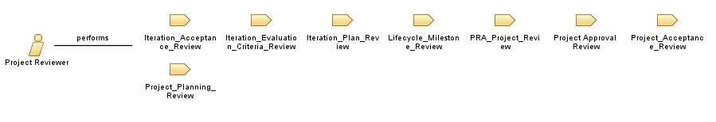

| Role: Project Reviewer |
 |
|
Relationships
 |
||
| Primary Performs | ||
|---|---|---|
| Modifies |
|
|
| Process Usage | ||
Staffing
| Skills | The project reviewer role requires many years of business (including contract formulation and negotiation), technical, and software project management experience, and the individual who fills this role is chosen because of demonstrated decision-making ability at the operational management level. The project reviewer must have an excellent understanding of risk management principles and must be skilled at estimation in an environment with incomplete or fuzzy information. |
|---|